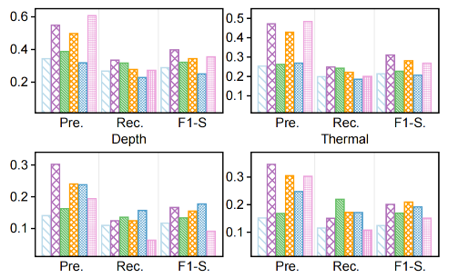
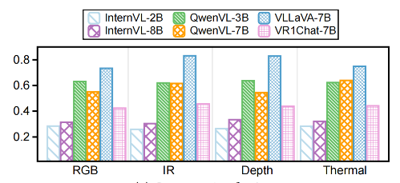
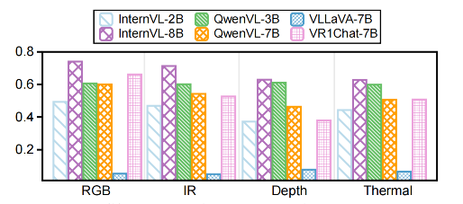
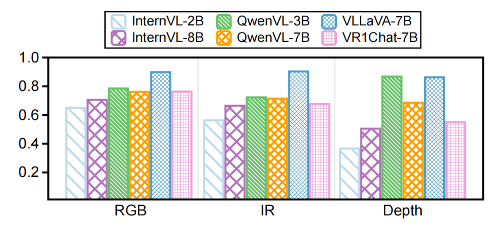

Three benchmarks of increasing difficulty — recognition (HAR), understanding (HAU) and reasoning (HARn) — and how today's models score on each.
CUHK-X provides three comprehensive benchmarks that progressively increase in complexity, from basic recognition to advanced reasoning:
Objective: Traditional action classification across modalities
Objective: Comprehend actions through contextual integration
Objective: Infer intentions and causal relationships
Leveraging Large Language Models to generate consistent, logical activity descriptions that participants then perform. This approach ensures:
Activities follow natural progression and causality
Actions are contextually appropriate
Quality assurance for generated scenarios
Efficient generation of diverse scenarios
Our comprehensive evaluation across the three benchmarks reveals several important insights:
| Modality | Accuracy | Precision | Recall | F1-Score |
|---|---|---|---|---|
| RGB | 90.89% | 92.24% | 91.02% | 91.28% |
| Depth | 90.46% | 91.76% | 90.75% | 90.93% |
| IR | 90.22% | 91.53% | 89.94% | 90.46% |
| Thermal | 92.57% | 93.54% | 93.50% | 93.36% |
| mmWave | 46.63% | 48.29% | 46.63% | 44.53% |
| IMU | 45.52% | 40.84% | 38.00% | 38.32% |
| Skeleton | 79.08% | 91.46% | 79.08% | 84.17% |



